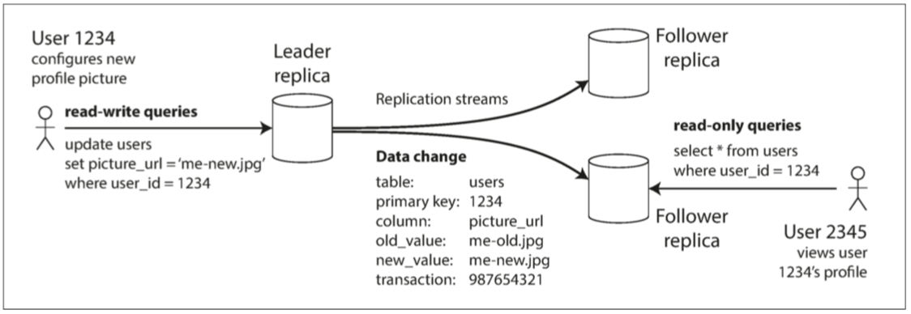
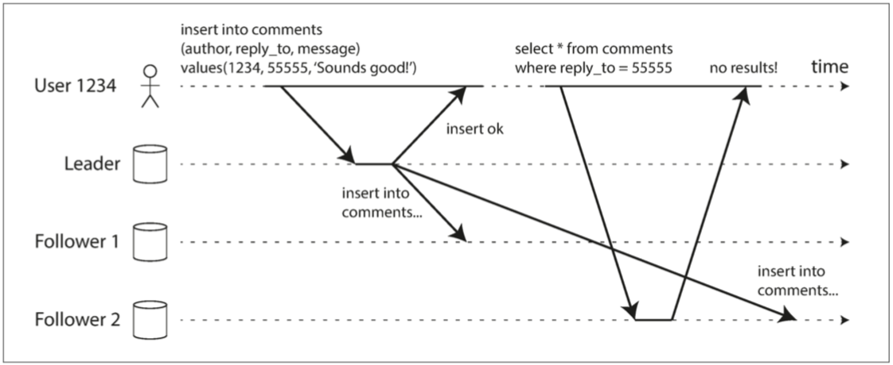
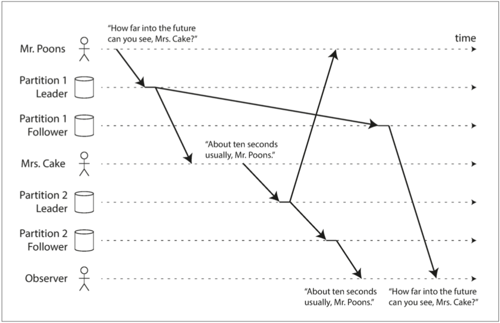
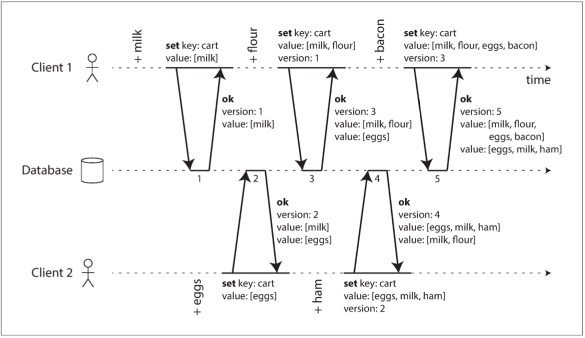

复制
出于各种各样的原因，希望能复制数据：
- 延迟：使得数据与用户在地理上接近 ，如 CDN；
- 可用性：即使系统的一部分出现故障，系统也能继续工作；
- 读取吞吐量：伸缩可以接受读请求的机器数量；
复制需要仔细考虑并发和所有可能出错的事情，并处理故障（如不可用的节点和网络中断，不包括更隐蔽的故障，如软件错误导致的静默数据损坏）。
复制的困难之处在于处理复制数据的 变更（change），三种流行的变更复制算法：
- 单领导者（single leader，单主）：客户端将所有写入操作发送到单个节点（主库），读取可以在任何副本上执行（但可能是旧数据）
- 多领导者（multi leader，多主） ：客户端将每个写入发送到几个主库节点之一，主库将数据更改事件流发送给彼此以及任何从库节点。
- 无领导者（leaderless，无主）：客户端将每个写入发送到几个节点，并从多个节点并行读取，以检测和纠正具有陈旧数据的节点。
复制可以是同步的，也可以是异步的，这在发生故障时对系统行为有深远的影响。
- 例如，如果主库失败后你将一个异步更新的从库提升为新的主库，那么最近提交的数据可能会丢失。
决定应用程序在复制延迟时的行为的一致性模型：
- 写后读一致性：用户应该总是能看到自己提交的数据。
- 单调读：用户在看到某个时间点的数据后，他们不应该再看到该数据在更早时间点的情况。
- 一致前缀读：用户应该看到数据处于一种具有因果意义的状态：例如，按正确的顺序看到一个问题和对应的回答。
多主复制和无主复制方法所固有的并发问题：因为他们允许多个写入并发发生，这可能会导致冲突。
- 一个算法来确定一个操作是否发生在另一个操作之前，或者它们是否并发发生；
- 通过合并并发更新来解决冲突的方法；
领导者与追随者
存在多个副本时，会不可避免的出现一个问题：如何确保所有数据都落在了所有的副本上？
基于领导者的复制（leader-based replication） （也称 主动/被动（active/passive） 复制或 主/从（master/slave） 复制
- 其中一个副本被指定为 领导者（leader），也称为 主库（master|primary），其他副本被称为 追随者（followers），亦称为 只读副本（read replicas）、从库（slaves）、备库（ secondaries） 或 热备（hot-standby）；
写入流程：仅向领导者写入数据；
- 当客户端要向数据库写入时，它必须将请求发送给该 领导者；
- 当领导者将新数据写入本地存储时，它也会将数据变更发送给所有的追随者，称之为 复制日志（replication log） 或 变更流（change stream）；
- 每个跟随者从领导者拉取日志，并相应更新其本地数据库副本，方法是按照与领导者相同的处理顺序来进行所有写入。
读取流程：向领导者或任一追随者进行查询。

同步复制与异步复制
同步与异步复制的示例：从库1是同步复制，从库2是异步复制

关于真实环境的使用：
-
将所有从库都设置为同步的是不切实际，一般采用 半同步（semi-synchronous）\(^{[1]}\)，一个从库同步，其它从库异步；
-
通常情况下，基于领导者的复制都配置为完全异步；
-
已经确认写入也不能保证是 持久（Durable）：未复制给从库的写入在主库失效不可恢复时将会丢失；
对于异步复制系统而言，主库故障时会丢失数据可能是一个严重的问题：
- 链式复制（chain replication）\(^{[2,3]}\)：研究不丢数据但仍能提供良好性能和可用性的复制方法
设置新的从库
有时候需要设置一个新的从库：也许是为了增加副本的数量，或替换失败的节点。如何确保新的从库拥有主库数据的精确副本？
- 简单地将数据文件从一个节点复制到另一个节点通常是不够的
- 标准的文件复制会看到数据库的不同部分在不同的时间点的内容，其结果可能没有任何意义。
- 锁定数据库（使其不可用于写入）来使磁盘上的文件保持一致：违背高可用的目标
标准步骤：
- 在某个时刻获取主库的一致性快照（如果可能，不必锁定整个数据库），大多数数据库都具有这个功能，因为它是备份必需的
- 将快照复制到新的从库节点
- 从库连接到主库，并拉取快照之后发生的所有数据变更。这要求快照与主库复制日志中的位置精确关联。
- PostgreSQL 将其称为 日志序列号（log sequence number，LSN），MySQL 将其称为 二进制日志坐标（binlog coordinates）
- 当从库处理完快照之后积累的数据变更，就说它 赶上（caught up） 了主库，现在它可以继续及时处理主库产生的数据变化
处理节点宕机
即使个别节点失效，也能保持整个系统运行，并尽可能控制节点停机带来的影响。
从库失效：追赶恢复
从库可以从日志中知道，在发生故障之前处理的最后一个事务，从库可以连接到主库，并请求在从库断开期间发生的所有数据变更。
主库失效：故障切换
故障切换（failover）：一个从库需要被提升为新的主库，需要重新配置客户端将它们的写操作发送给新的主库，其他从库需要开始拉取来自新主库的数据变更。
自动的故障切换过程通常由以下步骤组成：
- 确认主库失效：没有万无一失的方法来检测出现了什么问题，所以大多数系统只是简单使用 超时（Timeout）
- 选择一个新的主库：最佳人选通常是拥有旧主库最新数据副本的从库（以最小化数据损失），这是个共识问题；
- 重新配置系统以启用新的主库：同时确保旧主库（重启后）意识到新主库的存在并成为一个从库
故障切换过程可能存在的问题：
- 数据冲突/丢失：异步复制，则新主库可能没有收到老主库宕机前最后的写入操作
- 选出新主库后，如果老主库重新加入集群，新主库可能已经收到了与老主库尚未复制的写入相冲突的写入
- 最常见的解决方案是简单丢弃老主库未复制的写入，这很可能打破客户对于数据持久性的期望。
- 外部不一致：如果数据库需要和其他外部存储相协调，那么丢弃写入内容是极其危险的操作
-
在 GitHub 的一场事故\(^{[4]}\)中，数据库使用自增主键，新主库计数器落后于老主库，这些主键并且在Redis也使用，导致数据不一致；
-
脑裂（split brain）：发生某些故障时（见第八章）可能会出现两个节点都以为自己是主库的情况
- 如果两个主库都可以接受写操作，却没有冲突解决机制（请参阅 “多主复制”），数据会丢失或损坏；
- 当检测到两个主库节点同时存在时关闭其中一个节点时（屏障（fencing）机制），但粗糙的机制可能最后会导致两个节点都被关闭\(^{[5]}\)；
如何配置正确的超时时间：
- 超时时间越长意味着恢复时间也越长；
- 超时设置太短，又可能会出现不必要的故障切换；
- 高负载和网络故障会导致响应超时，如果系统已经处于高负载或网络问题的困扰之中，那么不必要的故障切换可能会让情况变得更糟糕
复制日志的实现
基于领导者的复制在底层是如何工作的？实践中有好几种不同的复制方式。
基于语句的复制
主库记录下它执行的每个写入请求（语句，即 statement）并将该语句日志发送给从库
- 非确定性（nondeterministic） 的问题：例如
Now()和Rand()函数，触发器/存储过程产生发非确定的副作用等； - 顺序执行：在每个副本上按照完全相同的顺序执行它们
传输预写式日志（WAL）
通常会将写操作追加到日志中：日志都是包含所有数据库写入的仅追加字节序列，可以使用完全相同的日志在另一个节点上构建副本
- 对于日志结构存储引擎（请参阅 “SSTables 和 LSM 树”），日志是主要的存储位置。日志段在后台压缩，并进行垃圾回收。
- 对于覆写单个磁盘块的 B 树，每次修改都会先写入 预写式日志（Write Ahead Log, WAL），以便崩溃后索引可以恢复到一个一致的状态
通过使用这个日志，从库可以构建一个与主库一模一样的数据结构拷贝。
- 缺点是日志记录的数据非常底层：WAL 包含哪些磁盘块中的哪些字节发生了更改。
- 复制与存储引擎紧密耦合，存储格式的变更的兼容性（升级版本是否需要停机）；
逻辑日志复制（基于行）
对复制和存储引擎使用不同的日志格式，这样可以将复制日志从存储引擎的内部实现中解耦出来
- 逻辑日志（logical log）：以将其与存储引擎的（物理）数据表示区分开来
关系数据库的逻辑日志通常是以行的粒度来描述对数据库表的写入记录的序列：
- 对于插入的行，日志包含所有列的新值；
- 对于删除的行，主键唯一标识行，如果没有主键，则记录所有旧列的值；
- 对于更新的行，足够的信息来唯一标识被更新的行，以及所有列的新值（或至少所有已更改的列的新值）
修改多行的事务会生成多条这样的日志记录，后面跟着一条指明事务已经提交的记录。
- 逻辑日志与存储引擎的内部实现是解耦的，系统可以更容易地做到向后兼容；
- 逻辑日志格式也更容易解析，用于数据变更捕获（change data capture）；
基于触发器的复制
到目前为止描述的复制方法是由数据库系统实现的，不涉及任何应用程序代码。
某些情况下需要更多的灵活性。例如，如果你只想复制数据的一个子集，或者想从一种数据库复制到另一种数据库，或者如果你需要冲突解决逻辑（请参阅 “处理写入冲突”）：
- 触发器有机会将更改记录到一个单独的表中，使用外部程序读取这个表，再加上一些必要的业务逻辑，就可以将数据变更复制到另一个系统去；
- 基于触发器的复制通常比其他复制方法具有更高的开销，并且比数据库内置的复制更容易出错，也有很多限制，但是更灵活。
复制延迟问题
探讨复制延迟的滞后时间太长引入的不一致性所导致的问题，以及相关的解决方案。
对于读多写少的场景（Web 上的常见模式），通常创建一主多从，将读请求分散到所有的从库，并允许由附近的副本来处理读请求：
- 异步复制：完全同步的配置将是非常不可靠，单个节点异常导致系统无法写入；
- 一致性问题：同时对主库和从库执行相同的查询，可能得到不同的结果，只具备最终一致性；
复制延迟（replication lag），即写入主库到反映至从库之间的延迟
- 可能仅仅是几分之一秒，在实践中并不显眼
- 如果系统在接近极限的情况下运行，或网络中存在问题时，延迟可以轻而易举地超过几秒，甚至达到几分钟
读己之写
用户写入后从旧副本中读取数据：需要写后读 (read-after-write) 的一致性，也称为 读己之写一致性（read-your-writes consistency）\(^{[6]}\)
- 如果用户重新加载页面，他们总会看到他们自己提交的任何更新，但不对其它用户做出承诺；

如何在基于领导者的复制系统中实现写后读一致性？有各种可能的技术：
- 对于用户 可能修改过 的内容，总是从主库读取：有办法不通过实际的查询就可以知道用户是否修改了某些东西
- 总是从主库读取用户自己的档案，从库读取其他用户的档案：因为用户个人资料信息通常只能由用户本人编辑，而不能由其他人编辑：
- 应用中的大部分内容都可能被用户编辑的场景：上述办法没用，需要使用其它标准
- 跟踪上次更新的时间，在上次更新后的一分钟内，从主库读
- 监控从库的复制延迟，防止向任何滞后主库超过一分钟的从库发出查询
- 客户端可以记住最近一次写入的时间戳（查询时带上），系统需要确保从库在处理该用户的读取请求时，该时间戳前的变更都已经传播到了本从库中
- 当前从库不够新，则可以从另一个从库读取，或者等待从库追赶上来
-
时间戳可以是逻辑时间戳（表示写入顺序的东西，例如日志序列号）或实际的系统时钟（在这种情况下，时钟同步变得至关重要）
-
副本分布在多个数据中心（在地理上接近用户或者出于可用性目的），有额外的复杂性。
- 任何需要由主库提供服务的请求都必须路由到包含该主库的数据中心，而不再是就近的数据中心；
更复杂的情况：同一位用户从多个设备（例如桌面浏览器和移动 APP）请求服务的时候，跨设备的写后读一致性
- 如果用户在一个设备上输入了一些信息，然后在另一个设备上查看，则应该看到他们刚输入的信息。
- 记住用户上次更新时间戳的方法变得更加困难：对这些元数据进行中心化的存储，因为一个设备上运行的程序不知道另一个设备上发生了什么；
- 如果副本分布在不同的数据中心，很难保证来自不同设备的连接（宽带和蜂窝数据网络）会路由到同一数据中心
- 如果请求需要读主库，可能首先需要把来自该用户所有设备的请求都路由到同一个数据中心。
单调读
时光倒流（moving backward in time）：从异步从库读取时可能发生的异常。
- 从不同从库进行多次读取时
用户首先从新副本读取，然后从旧副本读取。时间看上去回退了。为了防止这种异常，我们需要单调的读取。

单调读（monotonic reads）\(^{[7]}\)可以保证这种异常不会发生，比 强一致性（strong consistency） 弱，但比 最终一致性（eventual consistency） 强。
- 当读取数据时，可能会看到一个旧值；
- 如果已经读取到较新的数据，后续的读取不会得到更旧的数据；
实现单调读的一种方式是确保每个用户总是从同一个副本进行读取（不同的用户可以从不同的副本读取）。
- 基于用户 ID 的散列来选择副本，如果该副本出现故障，用户的查询将需要重新路由到另一个副本。
一致前缀读
从不同的从库读数据时可能违反了因果律：先读到回复的内容，再读到提问的内容
如果某些分区的复制速度慢于其他分区，那么观察者可能会在看到问题之前先看到答案。

一致前缀读（consistent prefix reads）\(^{[7]}\)可以防止这种异常
- 如果一系列写入按某个顺序发生，那么任何人读取这些写入时，也会看见它们以同样的顺序出现。
这是 分区（partitioned） 或 分片（sharded） 数据库中的一个特殊问题：某些分布式数据库中不同的分区独立运行，因此不存在 全局的写入顺序
- 当用户从数据库中读取数据时，可能会看到数据库的某些部分处于较旧的状态，而某些则处于较新的状态
解决方案：
- 确保任何因果相关的写入都写入相同的分区，但在一些应用中可能无法高效地完成这种操作。
- 通过显式跟踪因果依赖关系的算法，见 此前发生” 的关系和并发
复制延迟的解决方案
在使用最终一致的系统时，如果复制延迟增加到几分钟甚至几小时，则应该考虑应用程序的行为。
- 答案是 “没问题”，那很好
- 用户来说是不好的体验，那么设计系统来提供更强的保证（例如 写后读）
应用程序可以提供比底层数据库更强有力的保证，例如通过主库进行某种读取。但在应用程序代码中处理这些问题是复杂的，容易出错。
事务（transaction） 存在的原因：数据库通过事务提供强大的保证
- 应用程序开发人员不必担心微妙的复制问题，并可以信赖他们的数据库 “做了正确的事情”
在走向分布式（复制和分区）数据库时，许多系统放弃了事务，声称事务在性能和可用性上的代价太高，并断言在可伸缩系统中最终一致性是不可避免的。
多主复制
多领导者配置（multi-leader configuration，也称多主、多活复制，即 master-master replication 或 active/active replication）
- 允许多个节点接受写入：处理写入的每个节点都必须将该数据变更转发给所有其他节点。
- 每个主库同时是其他主库的从库
多主复制的应用场景
在单个数据中心内部使用多个主库的配置没有太大意义，因为其导致的复杂性已经超过了能带来的好处。
运维多个数据中心
副本分散在好几个不同的数据中心（可能会用来容忍单个数据中心的故障，或者为了在地理上更接近用户）
- 在每个数据中心内使用常规的主从复制
- 数据中心之间，每个数据中心的主库都会将其更改复制到其他数据中心的主库中
跨多个数据中心的多主复制

比较一下在运维多个数据中心时，单主和多主的适应情况
| 单主 | 多主 | |
|---|---|---|
| 性能 | 每个写入都必须穿过互联网，进入主库所在的数据中心。 - 增加写入中心，违背设置多个数据中心的初心； |
每个写操作都可以在本地数据中心进行处理，并与其他数据中心异步复制 - 数据中心的网络延迟对用户透明，用户感觉性能更好 |
| 容忍数据中心停机 | 故障切换必须使另一个数据中心里的从库成为主库 | 每个数据中心可以独立于其他数据中心继续运行，并且当发生故障的数据中心恢复上线时，复制会自动赶上 |
| 容忍网络问题 | 对数据中心之间的连接问题非常敏感，因为通过这个连接进行的写操作是同步的 | 异步复制功能的多主配置通常能更好地承受网络问题，临时的网络中断并不会妨碍正在处理的写入。 |
多主复制存在的问题：
- 写冲突：两个不同的数据中心可能会同时修改相同的数据，详细见处理写入冲突
需要离线操作的客户端
应用程序在断网之后仍然需要继续工作：如 手机，笔记本电脑和其他设备上的日历应用
- 每个设备都有一个充当主库的本地数据库（它接受写请求）
- 在所有设备上的日历副本之间同步时，存在异步的多主复制过程。复制延迟可能是几小时甚至几天，具体取决于何时可以访问互联网
从历史上各类日历同步功能的破烂实现可以看出，想把多主复制用好是多么困难的一件事。
有一些工具旨在使这种多主配置更容易。例如，CouchDB \(^{[8]}\)就是为这种操作模式（多主复制）而设计的。
协同编辑
实时协作编辑应用程序允许多个人同时编辑文档，如 Google Docs，飞书文档等：
- 算法在 “自动冲突解决” 中简要讨论
通常不会将协作式编辑视为数据库复制问题，但它与前面提到的离线编辑用例有许多相似之处
- 当一个用户编辑文档时，所做的更改将立即应用到其本地副本（如Web 浏览器），并异步复制到服务器和编辑同一文档的任何其他用户。
如果要保证不会发生编辑冲突：两种方式
- 取得文档的锁定：相当于主从复制模型下在主节点上执行事务操作
- 更改的单位设置得非常小（例如单次按键），并避免锁定。此时，需要解决冲突\(^{[9]}\)。
处理写入冲突
多主复制的最大问题是可能发生写冲突，这意味着需要解决冲突。
两个主库同时更新同一记录引起的写入冲突
- 用户 1 将页面的标题从 A 更改为 B，并且用户 2 同时将标题从 A 更改为 C；
- 每个用户的更改已成功应用到其本地主库。但当异步复制时，会发现冲突\(^{[10]}\)；

同步与异步冲突检测
如果你想要同步冲突检测，那么你可能不如直接使用单主复制。
在单主数据库中，第二个写入将被阻塞并等待第一个写入完成，或者中止第二个写入事务并强制用户重试。
在多主配置中，两个写入都是成功的，在稍后的某个时间点才能异步地检测到冲突。那时再来要求用户解决冲突可能为时已晚。
冲突检测同步：即等待写入被复制到所有副本，然后再告诉用户写入成功
- 失去多主复制的主要优点：允许每个副本独立地接受写入
避免冲突
处理冲突的最简单的策略就是避免它们\(^{[11]}\)：
- 应用程序可以确保特定记录的所有写入都通过同一个主库，那么冲突就不会发生
示例：
- 协同编辑时，将文档划分为不同章节部分（跟客户端设备类型无关），每个部分可以路由到同一个数据中心的主库进行处理；
对于离线操作时的多主冲突问题：离线的客户端上线时的冲突问题
- 用户手动解决冲突：先进行合并（类似 git merge），如果有冲突则用户手动解决；
有时你可能需要更改被指定的主库：某个数据中心出现故障或者用户已经迁移到另一个位置
- 此时，冲突避免将失效，你必须处理不同主库同时写入的可能性
收敛至一致的状态
在多主配置中，没有明确的写入顺序，所以最终值应该是什么并不清楚。
- 不同的并发的操作顺序，不存在一种比另一种更正确；
- 如果每个副本只是按照它看到写入的顺序写入，那么数据库最终将处于不一致的状态；
但需要保证：每个复制方案都必须确保数据最终在所有副本中都是相同
实现冲突合并解决有多种途径：
- 最后写入胜利（LWW, last write wins）：每个写入一个唯一的 ID（如时间戳），挑选最高 ID 的写入作为胜利者，并丢弃其他写入。
- 会造成数据丢失，见后面的检测并发写入
- 以某种方式将这些值合并在一起 - 例如，按字母顺序排序，然后连接它们
- 用一种可保留所有信息的显式数据结构来记录冲突，并编写解决冲突的应用程序代码（也许通过提示用户的方式）。
自定义冲突解决逻辑
解决冲突的最合适的方法可能取决于应用程序，大多数多主复制工具允许使用应用程序代码编写冲突解决逻辑。
- 写时执行：数据库系统检测到复制更改日志中存在冲突，就会调用冲突处理程序。后台进程中运行，并且必须快速执行。
- 读时执行：当检测到冲突时，所有冲突写入被存储。下一次读取数据时，会将这些多个版本的数据返回给应用程序。
- 应用程序可以提示用户或自动解决冲突，并将结果写回数据库。如 CouchDB 采用该方式。
冲突解决通常适用于单行记录或单个文档的层面，而不是整个事务\(^{[12]}\)。
- 有一个事务会原子性地进行几次不同的写入（请参阅 第七章），对于冲突解决而言，每个写入仍需分开单独考虑。
自动冲突解决
一些有趣的研究来自动解决由于数据修改引起的冲突：
- 无冲突复制数据类型（Conflict-free replicated datatypes，CRDT）\(^{[9,13]}\)：开源实现 Yjs \(^{[16]}\)
- 由多个用户同时编辑的集合、映射、有序列表、计数器等一系列数据结构，它们以合理的方式自动解决冲突。
- 可合并的持久数据结构（Mergeable persistent data structures）\(^{[14]}\)
- 显式跟踪历史记录，类似于 Git 版本控制系统，并使用三向合并功能（而 CRDT 使用双向合并）。
- 操作转换（operational transformation，OT）：Google Docs \(^{[15]}\)等协同编辑应用背后的冲突解决算法
- 专为有序列表的并发编辑而设计的，例如构成文本文档的字符列表
什么是冲突？
冲突的示例：
- 显而易见：两个写操作并发地修改了同一条记录中的同一个字段，并将其设置为两个不同的值
- 微妙而难以发现：为同一个房间同时创建两个不同的预订，则可能会发生冲突
- 即使应用程序在允许用户进行预订之前先检查会议室的可用性，如果两次预订是由两个不同的主库进行的，则仍然可能会有冲突
在 第七章 中看到更多的冲突示例，在 第十二章 中我们将讨论用于检测和解决复制系统中冲突的可伸缩方法。
多主复制拓扑
复制拓扑（replication topology）用来描述写入操作从一个节点传播到另一个节点的通信路径。
三种可以在多主复制中使用的拓扑示例
- 环形拓扑：每个节点从一个节点接受写入，并将这些写入（加上自己的写入）转发给另一节点；
- 星型拓扑：一个指定的根节点将写入转发给所有其他节点。星形拓扑可以推广到树；
- 全部到全部拓扑：每个主库都将其写入发送给其他所有的主库。

在环形和星形拓扑中，写入可能需要在到达所有副本之前通过多个节点：节点需要转发从其他节点收到的数据更改；
- 防止无限复制循环：每个节点被赋予一个唯一的标识符，并且在复制日志中，每次写入都会使用其经过的所有节点的标识符进行标记\(^{[17]}\)
- 当一个节点收到用自己的标识符标记的数据更改时，该数据更改将被忽略，因为节点知道它已经被处理过。
环形和星形拓扑的问题：容错性
- 如果只有一个节点发生故障，则可能会中断其他节点之间的复制消息流，导致它们无法通信，除非节点被修复；
- 拓扑结构可以重新配置为跳过发生故障的节点，但在大多数部署中，这种重新配置必须手动完成；
全部到全部的拓扑的问题：消息冲突
- 一些网络链接可能比其他网络链接更快（例如由于网络拥塞），结果是一些复制消息可能 “超越” 其他复制消息
使用多主复制时，写入可能会以错误的顺序到达某些副本
- 客户端 A 向主库 1 的表中插入一行，客户端 B 在主库 3 上更新该行。然而，主库 2 可以以不同的顺序接收写入
- 因果关系的问题：每一次写入时添加一个时间戳是不够（时钟同步问题，需要全局逻辑时间戳），主库 2 就无法正确地对这些事件进行排序
- 版本向量（version vectors）：解决事件排序问题，参阅 “检测并发写入”

无主复制
在关系数据库主导的时代，无主的复制系统的想法几乎被忘却，当亚马逊用于其内部的 Dynamo 系统之后，它再一次成为数据库的一种时尚架构\(^{[18]}\)。
无主复制适用于需要高可用、低延时、且能够容忍偶尔读到陈旧值的应用场景。
单主复制、多主复制：客户端向一个主库发送写请求，数据库系统负责将写入复制到其他副本。
- 主库决定写入的顺序，而从库按相同顺序应用主库的写入。
无主复制：
- 客户端直接将写入发送到几个副本，或；
- 由一个 协调者（coordinator） 节点代表客户端进行写入，但协调者不执行特定的写入顺序；
当节点故障时写入数据库
在基于领导者的配置中，多副本的数据库中，有一个副本不可用时，如果要继续处理写入，则可能需要执行故障切换（请参阅「处理节点宕机」）。
在无主配置中，不存在故障转移：下图示例，假设三个副本中的两个承认写入是足够
- 法定写入，法定读取，并在节点中断后读修复

读修复和反熵
在一个不可用的节点重新联机之后，读其数据，可能会拿到陈旧的数据
- 读请求将被并行地发送到多个节点：版本号将被用于确定哪个值是更新的（请参阅 “检测并发写入”）。
在一个不可用的节点重新联机之后，它如何赶上它错过的写入？
- 读修复：适用于读频繁，客户端并行读取多个节点时，它可以检测到任何陈旧的响应，并将新值写回到该副本；
- 反熵过程：一些数据存储具有后台进程，该进程不断查找副本之间的数据差异，并将任何缺少的数据从一个副本复制到另一个副本
- 与基于领导者的复制中的复制日志不同，此反熵过程不会以任何特定的顺序复制写入，并且在复制数据之前可能会有显著的延迟。
如果没有反熵过程，很少被读取的值可能会从某些副本中丢失，从而降低了持久性。
读写的法定人数
如果有 n 个副本，每个写入必须由 w 个节点确认才能被认为是成功的，并且我们必须至少为每个读取查询 r 个节点。
- \(w+r>n\)：预期在读取时能获得最新的值，因为 r 个读取中至少有一个节点是最新的
- 常见的选择是使 n 为奇数（通常为 3 或 5）并设置 \(w=r=(n+1)/2\)（向上取整）
集群中可能有多于 n 个的节点（集群的机器数可能多于副本数目）。但是任何给定的值只能存储在 n 个节点上。这允许对数据集进行分区，从而可以支持比单个节点的存储能力更大的数据集。我们将在 第六章 继续讨论分区。
法定人数条件 \(w+r>n\)允许系统容忍不可用的节点：
- 如果 \(w<n\)，当节点不可用时，仍然可以处理写入；
- 如果 \(r<n\)，当节点不可用时，仍然可以处理读取；
- 对于 \(n=3,w=r=2\)，可以容忍一个不可用的节点；
如果\(w+r>n\)，读取 r 个副本，至少有一个副本必然包含了最近的成功写入

法定人数一致性的局限性
通常，r 和 w 被选为多数（超过\(n/2\) ）节点，因为这确保了 \(w+r>n\)，同时仍然容忍多达\(n/2\) 个节点故障。
可以将 w 和 r 设置为较小的数字，以使 \(w+r \le n\)（即法定条件不满足）
- 读取更有可能未包含具有最新值的节点
- 允许更低的延迟和更高的可用性
即使在 \(w+r>n\)的情况下，也可能存在返回陈旧值的边缘情况：
- 如果使用宽松的法定人数（见 “宽松的法定人数与提示移交”），w 个写入和 r 个读取可能落在完全不同的节点上，因此 r 节点和 w 之间不再保证有重叠节点\(^{[19]}\)；
- 如果两个写入同时发生，唯一安全的解决方案是合并并发写入（请参阅 “处理写入冲突”）。如果根据时间戳（最后写入胜利）挑选出一个胜者，则写入可能由于时钟偏差\(^{[20]}\)而丢失。将在 “检测并发写入” 继续讨论此话题；
- 如果写操作与读操作同时发生，写操作可能仅反映在某些副本上。在这种情况下，不确定读取返回的是旧值还是新值；
- 整体写入失败（在小于 w 个副本上写入成功）并没有在写入成功的副本上回滚，后续的读取仍然可能会读取这次失败写入的值\(^{[21]}\)；
- 如果携带新值的节点发生故障，需要从其他带有旧值的副本进行恢复，则存储新值的副本数可能会低于 w，从而打破法定人数条件；
- 即使一切工作正常，有时也会不幸地出现关于 时序（timing） 的边缘情况，我们将在 “线性一致性和法定人数” 中看到这点
因为通常得不到 “复制延迟问题” 中讨论的那些保证（读己之写，单调读，一致前缀读），前面提到的异常可能会发生在应用程序中。更强有力的保证通常需要 事务 或 共识。我们将在 第七章 和 第九章 回到这些话题。
监控陈旧度
从运维的角度来看，监视你的数据库是否返回最新的结果是很重要的。
- 对于基于领导者的复制，数据库通常会提供复制延迟的测量值
- 通过从主库的当前位置中减去从库的当前位置，你可以测量复制延迟的程度。
- 无主复制的系统中，没有固定的写入顺序
- 如果数据库只使用读修复（没有反熵过程），那么对于一个值可能会有多陈旧其实是没有限制
- 复制陈旧度的研究：根据参数 n、w 和 r 来预测陈旧读取的预期百分比\(^{[22]}\)
宽松的法定人数与提示移交
法定人数（如迄今为止所描述的）并不像它们可能的那样具有容错性，网络中断可以很容易地将客户端从大量的数据库节点上切断。
在一个大型的集群中（节点数量明显多于 n 个），网络中断期间客户端可能仍能连接到一些数据库节点，但又不足以组成一个特定的法定人数。
- 对于所有无法达到 w 或 r 个节点法定人数的请求，是否返回错误是更好的？
- 或者我们是否应该接受写入，然后将它们写入一些可达的节点，但不在这些值通常所存在的 n 个节点上？
后者被认为是一个 宽松的法定人数（sloppy quorum）\(^{[18]}\)：
- 写和读仍然需要 w 和 r 个成功的响应，但这些响应可能来自不在指定的 n 个 “主” 节点中的其它节点
- 提示移交（hinted handoff）：网络中断得到解决，一个节点代表另一个节点临时接受的任何写入都将被发送到适当的 “主” 节点
宽松的法定人数提高写入可用性：只要有任何 w 个节点可用，数据库就可以接受写入。
- 意味着即使当 \(w+r>n\) 时，也不能确保读取到某个键的最新值，因为最新的值可能已经临时写入了 n 之外的某些节点\(^{[21]}\)。
运维多个数据中心
无主复制也适用于多数据中心操作，既然它旨在容忍冲突的并发写入、网络中断和延迟尖峰。
Cassandra 在正常的无主模型中实现了他们的多数据中心支持\(^{[23]}\)：
- 副本的数量 n 包括所有数据中心的节点，配置中指定每个数据中心所拥有的副本的数量
- 每个来自客户端的写入都会发送到所有副本
- 客户端通常只等待来自其本地数据中心内的法定节点的确认，不会受到跨数据中心链路延迟和中断的影响
- 其他数据中心的高延迟写入通常被配置为异步执行
Riak 将客户端和数据库节点之间的所有通信保持在一个本地的数据中心，因此 n 描述了一个数据中心内的副本数量。数据库集群之间的跨数据中心复制在后台异步发生，其风格类似于多主复制\(^{[24]}\)。
检测并发写入
Dynamo 风格的数据库允许多个客户端同时写入相同的键（Key），这意味着即使使用严格的法定人数也会发生冲突。在 读修复 或 提示移交 期间也可能会产生冲突。
由于可变的网络延迟和部分节点的故障，事件可能以不同的顺序到达不同的节点。
如果每个节点只要接收到来自客户端的写入请求就简单地覆写某个键值，那么节点就会永久地不一致。下图显示了两个客户机 A 和 B 同时写入三节点数据存储中的键 X：
- 节点 1 接收来自 A 的写入，但由于暂时中断，未接收到来自 B 的写入。
- 节点 2 首先接收来自 A 的写入，然后接收来自 B 的写入。
- 节点 3 首先接收来自 B 的写入，然后从 A 写入。

为了最终达成一致，副本应该趋于相同的值。在 “处理写入冲突” 一节中已经简要介绍了一些解决冲突的技术，下面更详细地讨论这个问题。
最后写入胜利（丢弃并发写入）
实现最终收敛的一种方法是声明每个副本只需要存储 “最近” 的值，并允许 “更旧” 的值被覆盖和抛弃。
- 写入是 并发（concurrent） 的，那么它们的顺序就是不确定的，即没有自然的排序；
最后写入胜利（LWW, last write wins）：Cassandra 唯一支持的冲突解决方法\(^{[25]}\)
- 为每个写入附加一个时间戳，然后挑选最大的时间戳作为 “最近的”，并丢弃具有较早时间戳的任何写入
- 以 持久性 为代价：同一个键有多个并发写入，即使它们反馈给客户端的结果都是成功的（因为它们被写入 w 个副本），也只有一个写入将被保留，而其他写入将被默默地丢弃
- LWW 甚至可能会丢弃不是并发的写入，见 “有序事件的时间戳”
如果数据丢失不可接受，LWW 是解决冲突的一个很烂的选择。
在数据库中使用 LWW 的唯一安全方法是确保一个键只写入一次，然后视为不可变，从而避免对同一个键进行并发更新。
- ？？Cassandra 推荐使用的方法是使用 UUID 作为键，从而为每个写操作提供一个唯一的键\(^{[25]}\)。
“此前发生”的关系和并发
如果操作 B 了解操作 A，或者依赖于 A，或者以某种方式构建于操作 A 之上，则操作 A 在操作 B 之前发生（happens before）。
并发操作\(^{[26]}\)：如果两个操作中的任何一个都不在另一个之前发生（即，两个操作都不知道对方）。
- 如果一个操作发生在另一个操作之前，则后面的操作应该覆盖前面的操作，但是如果这些操作是并发的，则存在需要解决的冲突。
并发性、时间和相对性
由于分布式系统中的时钟问题，现实中是很难判断两个事件是否是 同时 发生的。
为了定义并发性，确切的时间并不重要：如果两个操作都意识不到对方的存在，就称这两个操作 并发，而不管它们实际发生的物理时间。
在计算机系统中，即使一个操作影响另一个操作，但两个操作也可能是 并发的。
- 如果网络缓慢或中断，两个操作间可能会出现一段时间间隔，但仍然是并发的，因为网络问题阻止一个操作意识到另一个操作的存在。
捕获"此前发生"关系
看一个算法，它可以确定两个操作是否为并发的，还是一个在另一个之前。简单起见，我们从一个只有一个副本的数据库开始。
下图显示了两个客户端同时向同一购物车添加项目：

上图操作之间的数据流如下图所示：箭头表示哪个操作发生在其他操作之前，意味着后面的操作知道或依赖于较早的操作。
- 客户端永远不会完全拿到服务器上的最新数据，因为总是有另一个操作同时进行。但是旧版本的值最终会被覆盖，并且不会丢失任何写入。

服务器可以只通过查看版本号来确定两个操作是否是并发的 —— 它不需要对值本身进行解释（因此该值可以是任何数据结构）。该算法的工作原理如下：
- 服务器为每个键维护一个版本号：每次写入该键时都递增版本号，并将新版本号与写入的值一起存储；
- 当客户端读取键时，服务器将返回所有未覆盖的值以及最新的版本号。客户端在写入前必须先读取；
- 当客户端写入键时，必须包含之前读取的版本号，并且必须将之前读取的所有值合并在一起；
- 当服务器接收到具有特定版本号的写入时，它可以覆盖该版本号或更低版本的所有值（因为它知道它们已经被合并到新的值中），但是它必须用更高的版本号来保存所有值（因为这些值与正在进行的其它写入是并发的）；
当一个写入包含前一次读取的版本号时，它会告诉我们的写入是基于之前的哪一种状态：
- 在不包含版本号的情况下进行写操作，则与所有其他写操作并发，因此它不会覆盖任何内容，只会在随后的读取中作为其中一个值返回。
合并并发写入的值
这种算法可以确保没有数据被无声地丢弃，客户端需要做一些额外的工作：客户端随后必须合并并发写入的值。
- 这些并发值为 兄弟（siblings）
合并并发值：
- 根据版本号或时间戳（最后写入胜利）来选择一个值，但这意味着丢失数据；
- 一种合理的合并值的方法就是做并集，如购物车的例子，但不适用于从购物车中移除东西；
- 墓碑（tombstone）机制：删除标记，表明合并时表明该项目已被移除；
在应用程序代码中做兄弟合并是复杂且容易出错：
- 一些数据结构被设计出来用于自动执行这种合并，如 CRDT\(^{[13,27,28]}\) 等；
版本向量
上例单副本时使用单个版本号来捕获操作之间的依赖关系，但是当多个副本并发接受写入时，这是不够的：
- 除了对每个键，我们还需要对 每个副本 使用版本号
- 信息指出了要覆盖哪些并发值，以及要保留哪些并发值或兄弟值
所有副本的版本号集合称为 版本向量（version vector）\(^{[29]}\) ：
- 当读取值时，版本向量会从数据库副本发送到客户端，并且随后写入值时需要将其发送回数据库；
- 版本向量允许数据库区分覆盖写入和并发写入；
- 版本向量结构能够确保从一个副本读取并随后写回到另一个副本是安全的
- Riak 2.0 \(^{[30,31]}\)中使用其变体的 虚线版本向量（dotted version vector）\(^{[32]}\)
版本向量和向量时钟
版本向量有时也被称为向量时钟，即使它们不完全相同。其中的差别很微妙 —— 细节请参阅参考资料\(^{[32,33,34]}\)。简而言之，在比较副本的状态时，版本向量才是正确的数据结构。
参考文献
- Yoshinori Matsunobu: “Semi-Synchronous Replication at Facebook,” yoshinorimatsunobu.blogspot.co.uk, April 1, 2014.
- Robbert van Renesse and Fred B. Schneider: “Chain Replication for Supporting High Throughput and Availability,” at 6th USENIX Symposium on Operating System Design and Implementation (OSDI), December 2004.
- Jeff Terrace and Michael J. Freedman: “Object Storage on CRAQ: High-Throughput Chain Replication for Read-Mostly Workloads,” at USENIX Annual Technical Conference (ATC), June 2009.
- Jesse Newland: “GitHub Availability This Week,” github.com, September 14, 2012.
- Mark Imbriaco: “Downtime Last Saturday,” github.com, December 26, 2012.
- Douglas B. Terry, Alan J. Demers, Karin Petersen, et al.: “Session Guarantees for Weakly Consistent Replicated Data,” at 3rd International Conference on Parallel and Distributed Information Systems (PDIS), September 1994. doi:10.1109/PDIS.1994.331722
- Douglas B. Terry: “Replicated Data Consistency Explained Through Baseball,” Microsoft Research, Technical Report MSR-TR-2011-137, October 2011.
- J. Chris Anderson, Jan Lehnardt, and Noah Slater: CouchDB: The Definitive Guide. O'Reilly Media, 2010. ISBN: 978-0-596-15589-6
- Martin Kleppmann and Alastair R. Beresford: “A Conflict-Free Replicated JSON Datatype,” arXiv:1608.03960, August 13, 2016.
- Frazer Clement: “Eventual Consistency – Detecting Conflicts,” messagepassing.blogspot.co.uk, October 20, 2011.
- Robert Hodges: “State of the Art for MySQL Multi-Master Replication,” at Percona Live: MySQL Conference & Expo, April 2013.
- Riley Berton: “Is Bi-Directional Replication (BDR) in Postgres Transactional?,” sdf.org, January 4, 2016.
- Marc Shapiro, Nuno Preguiça, Carlos Baquero, and Marek Zawirski: “A Comprehensive Study of Convergent and Commutative Replicated Data Types,” INRIA Research Report no. 7506, January 2011.
- Benjamin Farinier, Thomas Gazagnaire, and Anil Madhavapeddy: “Mergeable Persistent Data Structures,” at 26es Journées Francophones des Langages Applicatifs (JFLA), January 2015.
- John Day-Richter: “What’s Different About the New Google Docs: Making Collaboration Fast,” googledrive.blogspot.com, 23 September 2010.
- "yjs/yjs: Shared data types for building collaborative software".
- Lars Hofhansl: “HBASE-7709: Infinite Loop Possible in Master/Master Replication,” issues.apache.org, January 29, 2013.
- Giuseppe DeCandia, Deniz Hastorun, Madan Jampani, et al.: “Dynamo: Amazon's Highly Available Key-Value Store,” at 21st ACM Symposium on Operating Systems Principles (SOSP), October 2007.
- Joseph Blomstedt: “Re: Absolute Consistency,” email to riak-users mailing list, lists.basho.com, January 11, 2012.
- John Daily: “Clocks Are Bad, or, Welcome to the Wonderful World of Distributed Systems,” basho.com, November 12, 2013.
- Joseph Blomstedt: “Bringing Consistency to Riak,” at RICON West, October 2012.
- Peter Bailis, Shivaram Venkataraman, Michael J. Franklin, et al.: “Quantifying Eventual Consistency with PBS,” Communications of the ACM, volume 57, number 8, pages 93–102, August 2014. doi:10.1145/2632792
- “Apache Cassandra 2.0 Documentation,” DataStax, Inc., 2014.
- “Riak Enterprise: Multi-Datacenter Replication.” Technical whitepaper, Basho Technologies, Inc., September 2014.
- Jonathan Ellis: “Why Cassandra Doesn't Need Vector Clocks,” datastax.com, September 2, 2013.
- Leslie Lamport: “Time, Clocks, and the Ordering of Events in a Distributed System,” Communications of the ACM, volume 21, number 7, pages 558–565, July 1978. doi:10.1145/359545.359563
- Sam Elliott: “CRDTs: An UPDATE (or Maybe Just a PUT),” at RICON West, October 2013.
- Joel Jacobson: “Riak 2.0: Data Types,” blog.joeljacobson.com, March 23, 2014.
- D. Stott Parker Jr., Gerald J. Popek, Gerard Rudisin, et al.: “Detection of Mutual Inconsistency in Distributed Systems,” IEEE Transactions on Software Engineering, volume 9, number 3, pages 240–247, May 1983. doi:10.1109/TSE.1983.236733
- Sean Cribbs: “A Brief History of Time in Riak,” at RICON, October 2014.
- Russell Brown: “Vector Clocks Revisited Part 2: Dotted Version Vectors,” basho.com, November 10, 2015.
- Nuno Preguiça, Carlos Baquero, Paulo Sérgio Almeida, et al.: “Dotted Version Vectors: Logical Clocks for Optimistic Replication,” arXiv:1011.5808, November 26, 2010.
- Carlos Baquero: “Version Vectors Are Not Vector Clocks,” haslab.wordpress.com, July 8, 2011.
- Reinhard Schwarz and Friedemann Mattern: “Detecting Causal Relationships in Distributed Computations: In Search of the Holy Grail,” Distributed Computing, volume 7, number 3, pages 149–174, March 1994. doi:10.1007/BF02277859